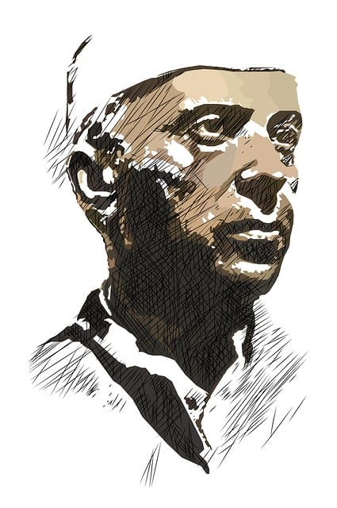

CSS Media Quries
The background will change according to the viewport width change
Smartphones - from 320px amd up(min-width:320px)
BLUE

Tablets, ipads(Potrait) - from 768px and up(min-width:768)
GREEN
Tablets, ipads(Landscape) - from 1024px and up(min-width:1024)
YELLOW
Desktops and Laptops - from 1224px and up(min-width:1224)
ORANGE
Large screens - from 1824px and up(min-width:1824)
AQUA (zoom out if needed [Ctrl & -])
Custom Media Quries - from 850px and up(min-width:950)
RED (zoom out if needed [Ctrl & -])